Что расскажет вам наш сайт?

 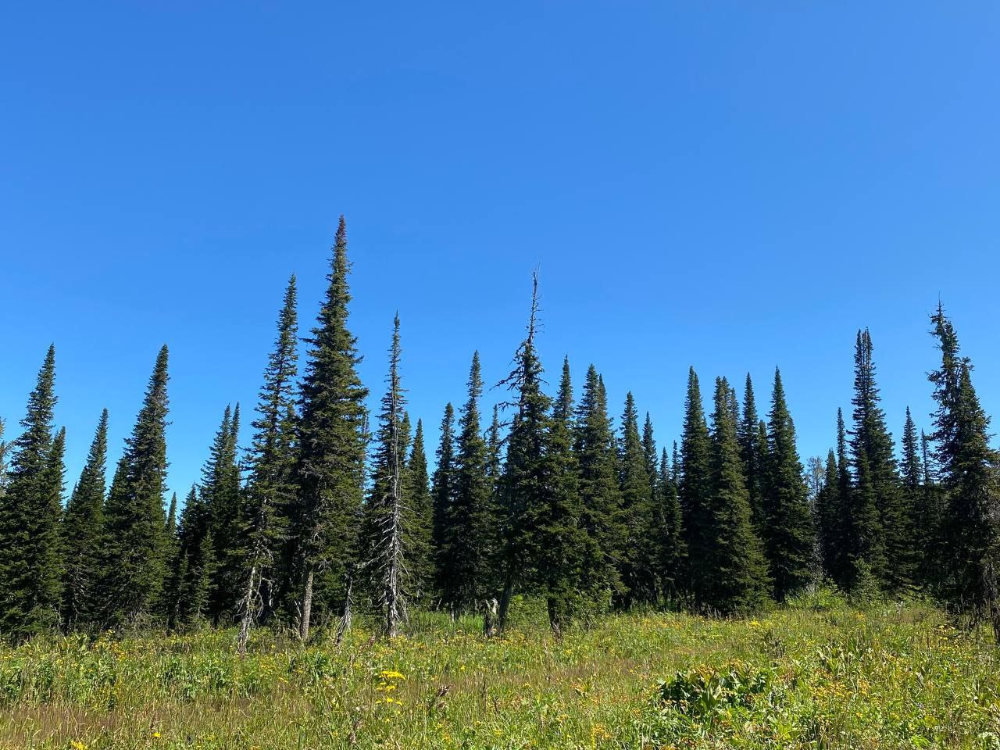
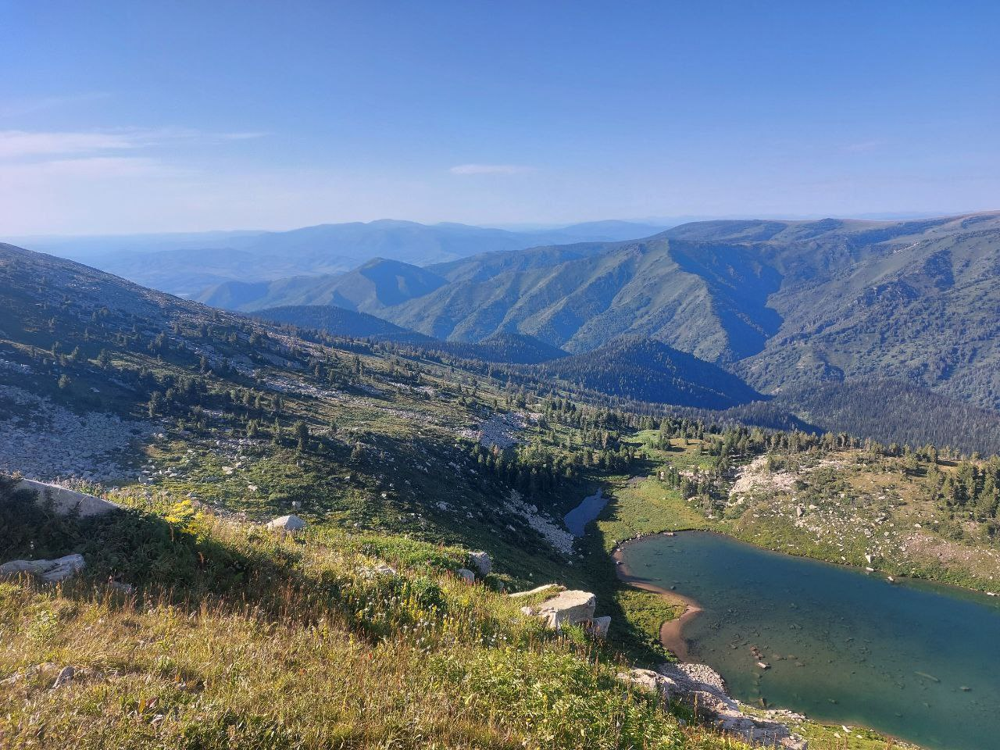
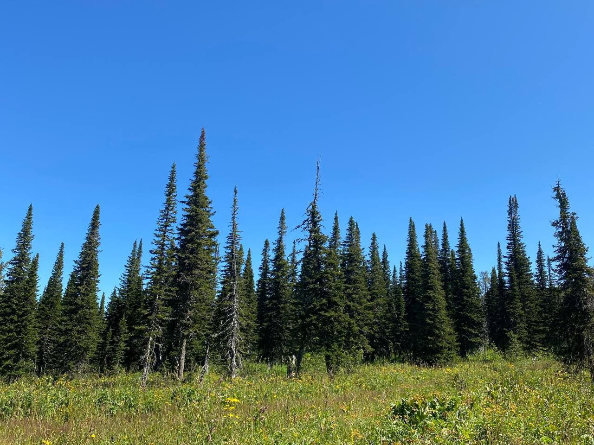
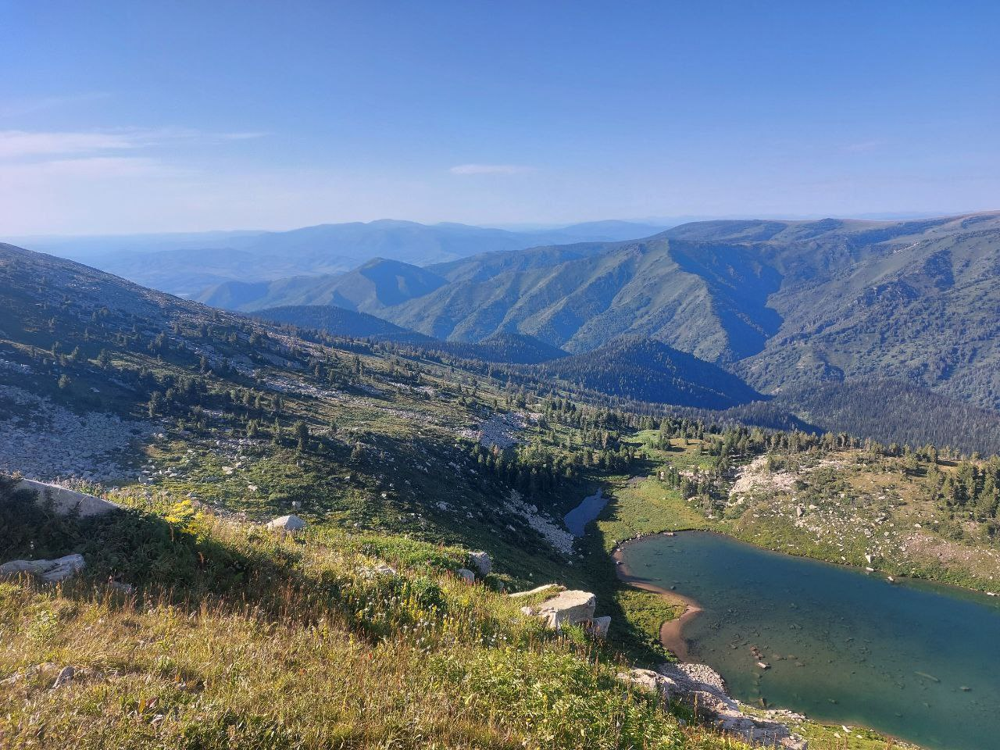
 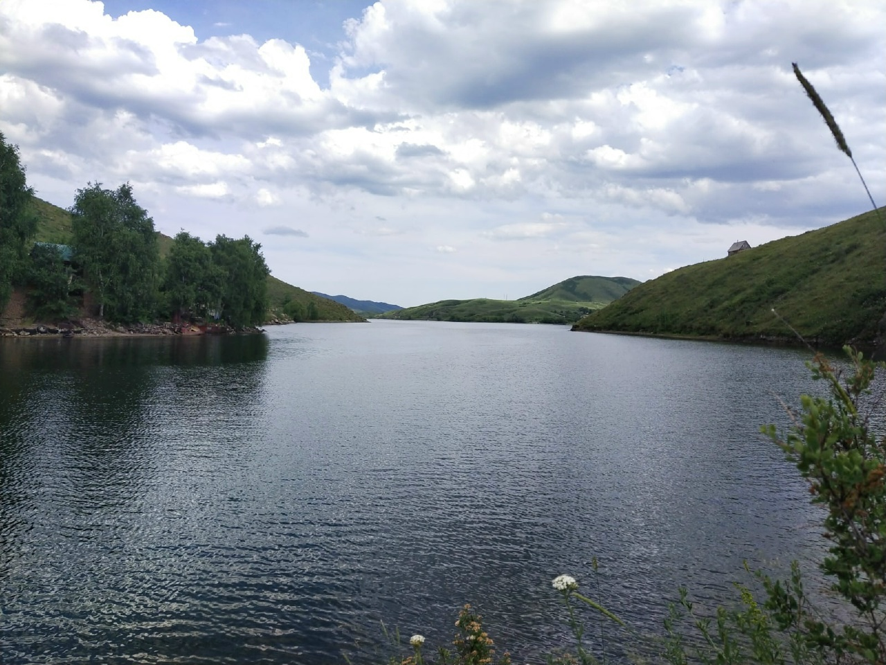
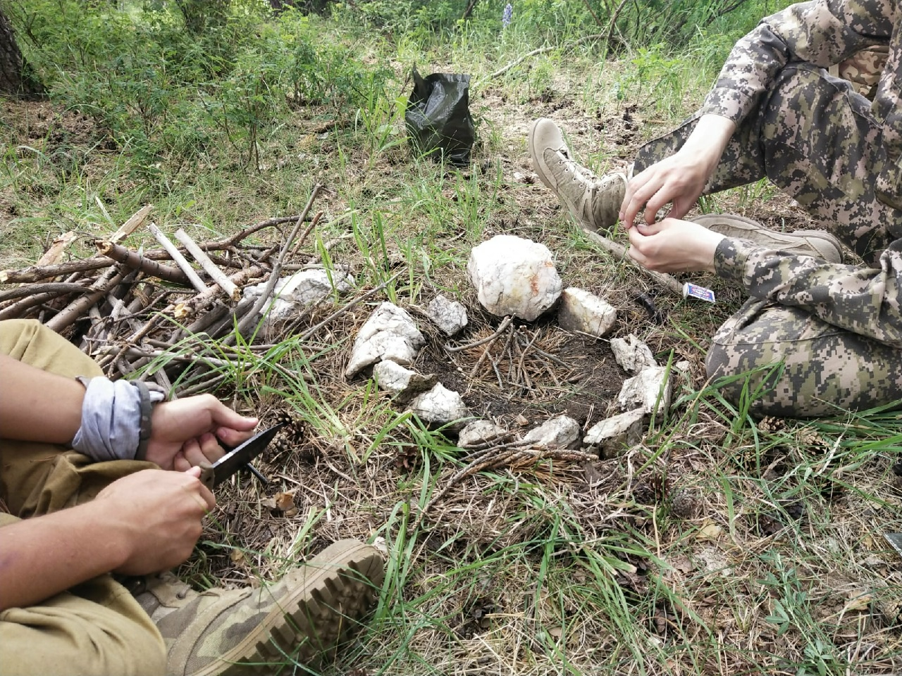
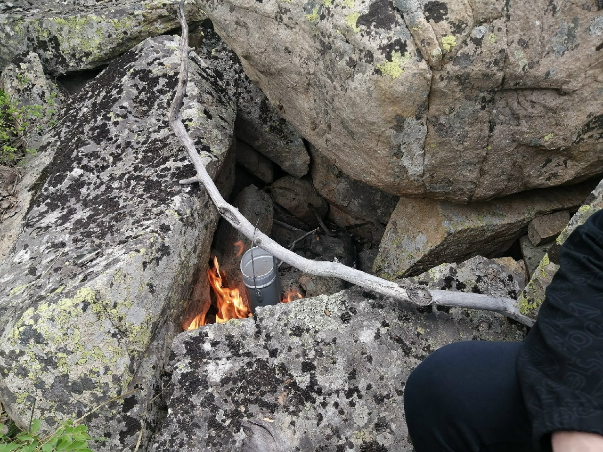
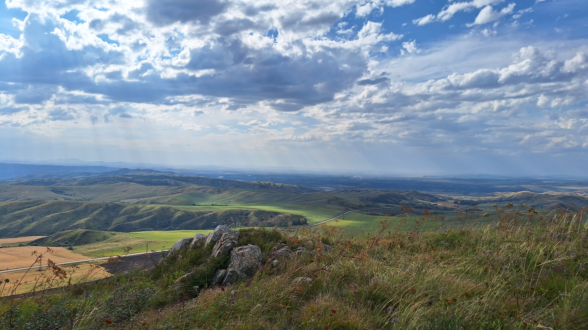
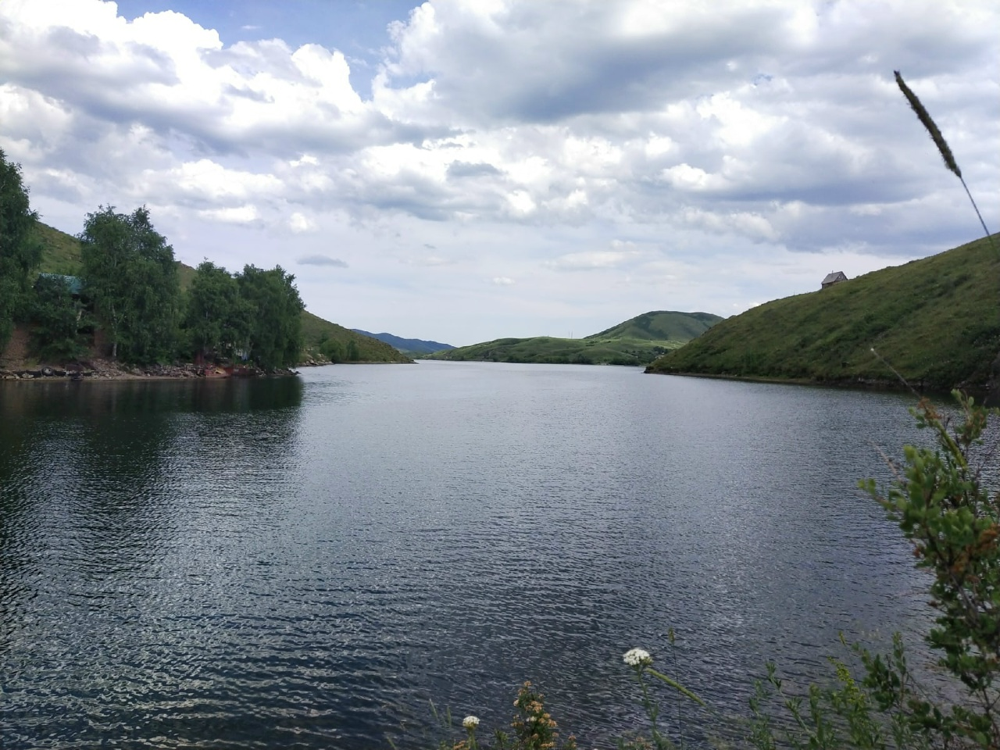
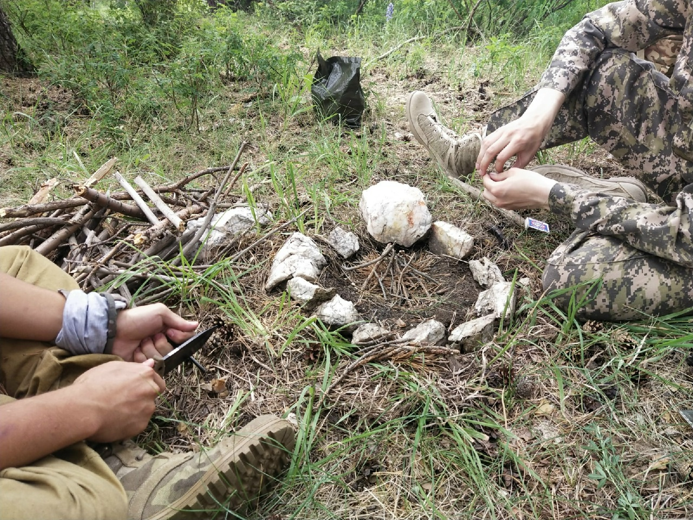
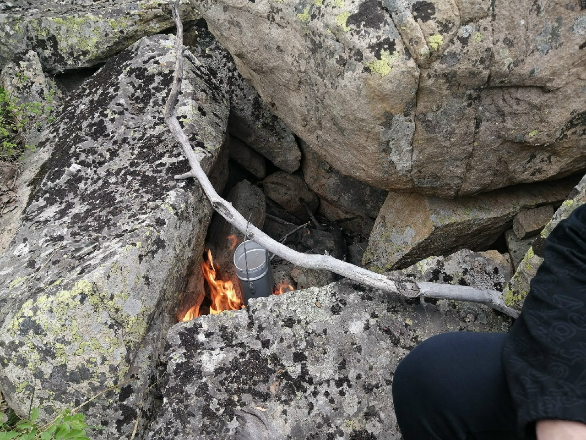
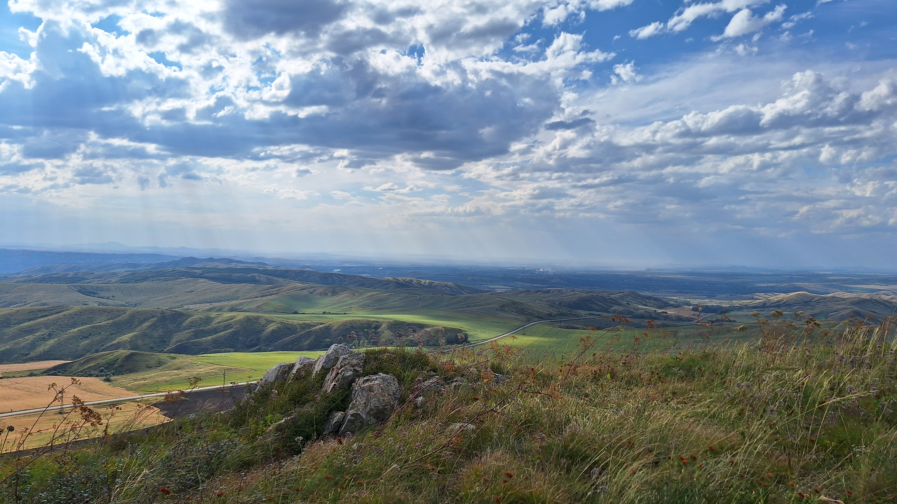
Наш сайт является местом где одни походники делятся опытом с другими походниками. Здесь вы сможете найти различные походные маршруты. Они сортированы по уровням сложности. Каждый маршрут имеет илюстрации с картами, информацию о местности (климат, перепады высот, местная флора и фауна, родники и другие особенности). Описано примерное время прохождения пути и средние затраты провизии. Так же, вы сможете найти различные заметки от опытных походников. Это могут быть уроки по ориентированию на местности и работе с картой, советы по выбору снаряжения, способы добычи огня и еды в лесу, а так же многое другое, что поможет вам в походе, например радиосвязь и медицина. Так же, Вы можете связаться с нами и предложить свою заметку. Это можно сделать в разделе связаться. Помимо этого, Вы можете установить наше мобильное приложение, созданное специально для походников. Подробности о его функционале читайте ниже:
Какие функции есть у нашего приложения?
Различные карты
В приложении собраны различные карты необходимые для походов: спутниковые снимки, карты высот и рельефа, а также топографические карты
Рисуйте маршрут
Рисуйте маршруты прямо в приложении пальцем. Нет необходимости вести только по дорогам, проведите маршрут через горы, леса и холмы!
ИИ-помощник
Встроенные интеллектуальный помощник поможет вам рассчитать необходимое количество еды и воды для похода на основе ваших данных, сложности и протяженности маршрута, а так же погодных условий
Погодные условия
Изучайте погоду не выходя из приложения. Посмотрите карту грозового фронта, где ожидается дождь, какая температура и влажность на участке, по которому собираетесь идти в поход